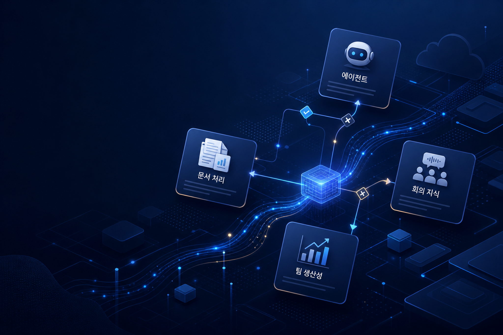
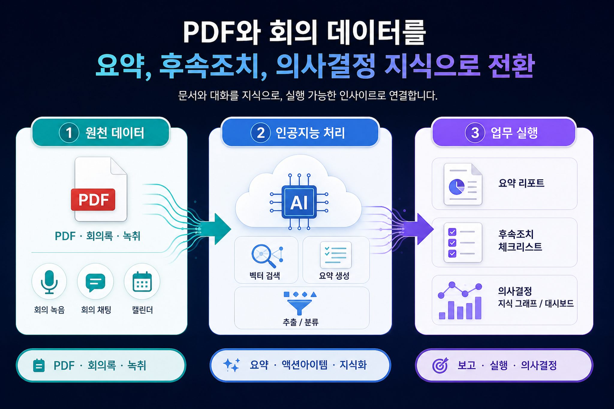
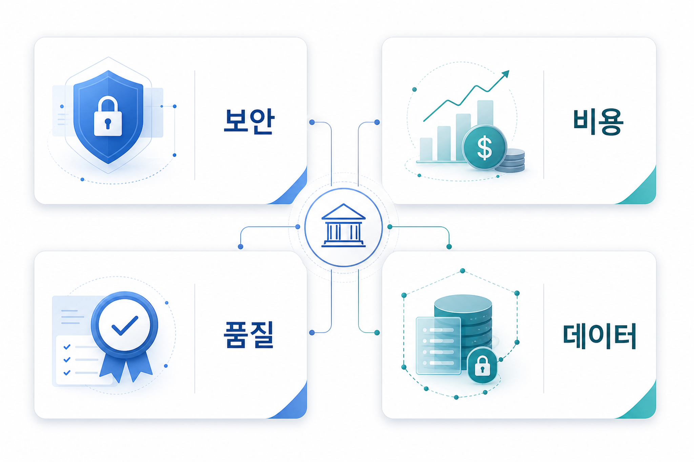

로켓 클로즈의 권리 이전 업무를 위한 에이전트형 인공지능 최적화
권리 이전 업무처럼 문서 확인과 반복 판단이 많은 절차에 에이전트형 인공지능을 붙이는 사례입니다. 기업은 업무 단계, 예외 처리, 사람 검토 위치를 함께 설계해야 합니다.
이번 실행에서 확인된 신규 글은 모두 아마존웹서비스 기계학습 블로그에서 나왔습니다. 관찰된 변화는 범용 발표보다 특정 업무 데이터, 회의, 문서, 전문서비스 팀의 실제 작업 단위에 인공지능을 붙이는 방향에 집중되어 있습니다.

로켓 클로즈 사례는 권리 이전 업무처럼 문서·검증·반복 판단이 많은 업무에 에이전트형 인공지능을 적용하는 방향을 보여줍니다. 이는 범용 챗봇보다 특정 업무 절차와 데이터 흐름을 기준으로 설계해야 함을 시사합니다.
아마존 퀵·시스코 웹엑스 엠시피 서버 기반 회의 보조자와 피디에프 문서 처리 파이프라인은 비정형 자료를 요약·분류·후속조치로 연결하는 패턴을 보여줍니다.
아마존웹서비스 프로페셔널 서비스 사례는 생성형 인공지능을 외부 고객 기능만이 아니라 내부 전문서비스 팀의 업무 방식 개선 대상으로 다룹니다. 다만 조직별 성과·책임 모델은 원문만으로 일반화하기 어려워 확인 필요입니다.
이번 수집 문서들은 에이전트, 문서 처리, 회의 데이터, 내부 생산성이라는 서로 다른 활용처를 다룹니다. 공통적으로 데이터 접근권한, 품질 검증, 비용 단위, 사람 검토 위치를 사전에 확인해야 합니다.

이번 수집분의 공통점은 모델 자체보다 모델이 호출되는 업무 맥락이 구체화된다는 점입니다. 문서 처리 파이프라인은 피디에프에서 추출된 정보를 요약·검증 가능한 데이터로 바꾸고, 회의 보조자는 회의 전후의 준비·정리·후속조치를 연결합니다. 로켓 클로즈 사례는 에이전트형 인공지능을 특정 산업 업무에 맞춘 반복 실행 구조로 다룹니다.
따라서 기업의 검토 포인트는 “어떤 모델을 쓸 것인가”보다 “어떤 원천 데이터, 승인 절차, 사람 검토 위치, 결과 저장소를 연결할 것인가”에 가깝습니다.
반복 문서 검토, 회의 전후 정리, 피디에프 기반 정보 추출처럼 입력과 산출물이 비교적 명확한 영역에서 적용 후보를 찾을 수 있습니다.
원천 데이터 권한, 사용자별 접근 범위, 결과물 검증 책임, 비용 산정 단위, 로그 보관 방식을 먼저 정의해야 합니다.
각 사례의 실제 성과 수치, 리전·가격·세부 구현 제약은 원문별 조건이 다르므로 적용 전 추가 확인이 필요합니다.
이번 자료만 기준으로 보면 실행은 대규모 전환 구호보다 업무 단위 후보를 좁히는 방식이 적합합니다. 문서·회의·반복 검증 업무 중 입력 자료가 안정적이고, 사람이 최종 판단을 보완할 수 있으며, 로그와 비용을 추적할 수 있는 영역을 우선 검토해야 합니다. 이후에는 결과 품질, 누락·오탐 사례, 데이터 접근권한, 비용 변동을 함께 측정하는 운영 지표가 필요합니다.

회의와 피디에프는 민감 정보가 포함될 수 있으므로 원천 저장소·검색 범위·요약 결과의 재사용 범위를 분리해야 합니다.
요약·추출·후속조치 생성 결과는 업무별 기준 샘플과 사람 검토 절차를 통해 확인해야 합니다.
문서 분량, 회의 빈도, 에이전트 호출 횟수에 따라 비용이 달라질 수 있으므로 기능별 사용량 추적이 필요합니다.
자동 생성 결과의 승인권자와 수정 책임을 명확히 하지 않으면 업무 속도보다 재검토 부담이 커질 수 있습니다.
권리 이전 업무처럼 문서 확인과 반복 판단이 많은 절차에 에이전트형 인공지능을 붙이는 사례입니다. 기업은 업무 단계, 예외 처리, 사람 검토 위치를 함께 설계해야 합니다.
회의 전 준비와 회의 후 후속조치를 연결하는 보조자 패턴입니다. 회의 데이터의 접근권한, 요약 품질, 후속 업무 저장 위치가 핵심 검토 지점입니다.
피디에프 기반 비정형 문서를 추출·분류·요약 가능한 업무 데이터로 바꾸는 파이프라인형 접근입니다. 문서 원본 보존과 결과 검증 절차가 중요합니다.
전문서비스 조직 내부의 일하는 방식을 인공지능으로 개선한 사례입니다. 다만 성과 수치와 조직 적용 조건은 원문 범위만으로 일반화하기 어려워 확인 필요입니다.